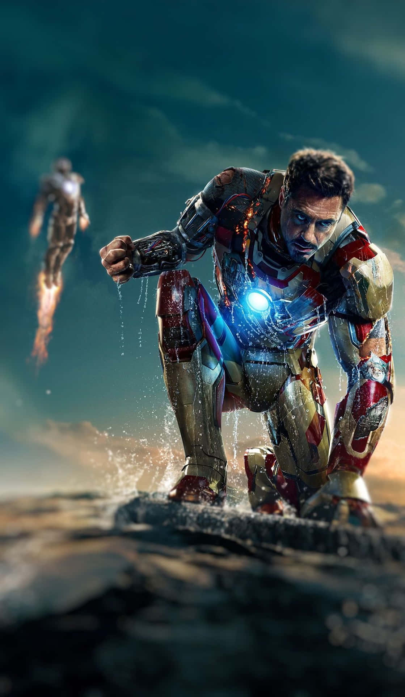
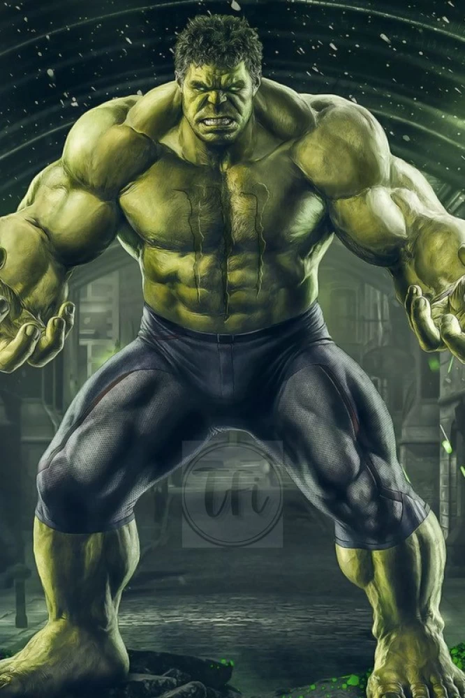
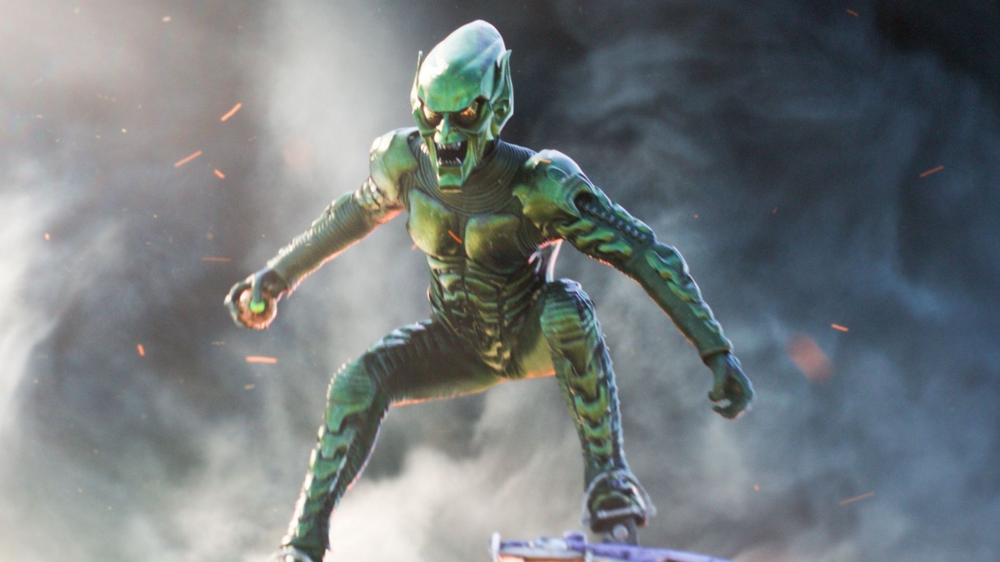
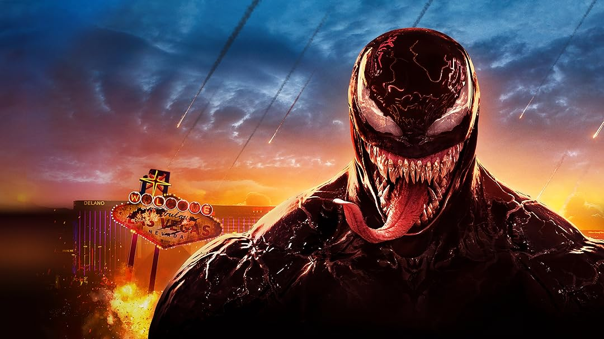
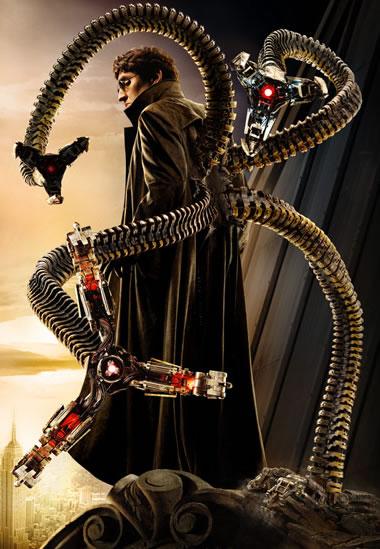

História do Homem-Aranha
O Homem-Aranha, ou Spider-Man, é um super-herói da Marvel criado por Stan Lee e Steve Ditko. Seu alter ego é Peter Parker, um jovem que ganha habilidades extraordinárias após ser mordido por uma aranha radioativa. Com esses poderes, como força aumentada, agilidade, o sentido aranha (que alerta sobre perigos) e a habilidade de se balançar entre prédios com suas teias artificiais, ele combate vilões para proteger Nova York. Seu lema é "Com grandes poderes, vêm grandes responsabilidades", e ele enfrenta dilemas pessoais enquanto tenta equilibrar sua vida de herói e as dificuldades de ser um adolescente comum.
Aliados
Homem de Ferro
O Homem de Ferro, ou Tony Stark, é um bilionário, inventor e filantropo que usa uma armadura tecnologicamente avançada para combater o crime e proteger o mundo. Ele é conhecido por sua inteligência, carisma e habilidades em engenharia. No universo dos quadrinhos, o Homem de Ferro é um membro dos Vingadores, um grupo de heróis que defende a Terra.
Capitão américa

O Capitão América é um herói superpoderoso, símbolo de coragem e justiça. Ele e o Homem-Aranha têm uma relação de mentor e amigo, com o Capitão servindo como modelo para o jovem Peter Parker. Juntos, atuam em várias missões, e o Capitão sempre oferece orientação ao Homem-Aranha em momentos de dúvida.
Hulk
O Hulk é um herói superpoderoso com força imensa, enquanto o Homem-Aranha é ágil e inteligente. Apesar das diferenças, eles se respeitam e já trabalharam juntos, com o Aranha admirando a força do Hulk e o Hulk reconhecendo a habilidade de Peter.
Vilões
Duende Verde
Um dos maiores inimigos de Peter Parker, com uma identidade secreta de supervilão, que usa uma armadura e bombas para causar destruição.
Venom
Inicialmente inimigo, Eddie Brock se funde com um simbiótico alienígena, criando o anti-herói Venom. Ele possui os mesmos poderes do Homem-Aranha, mas com mais força e um desejo de vingança contra Peter Parker por sua queda como jornalista e pela perda do simbiótico.
Dr. Octopus
Cientista brilhante, Otto Octavius perde o controle de seus braços mecânicos, que se tornam uma extensão de seu corpo. Ele se transforma em um dos inimigos mais perigosos do Homem-Aranha, sempre planejando crimes e tentando derrotá-lo com sua inteligência e força.